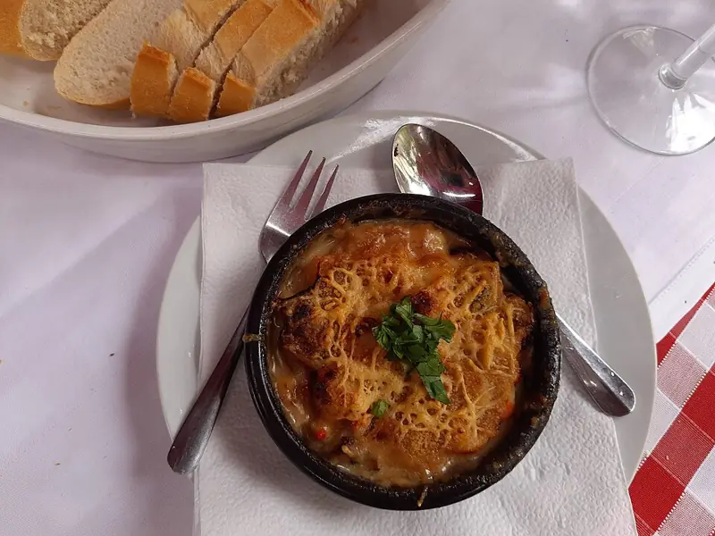

Фото: Gerda Arendt, CC0

Запеканка из макарон с сыром и яйцом
Вчерашние макароны, залитые яйцом с молоком и запечённые под сыром
35 мин4 порц.358 ккал на порциюБ 19 · Ж 16 · У 33Русская кухня
Продукты на 4 порц.
- Макароны варёные (остались)400 г
- Яйцо куриное3 шт
- Молоко0,75 стак.
- Сыр твёрдый100 г
- Сливочное масло15 г
- Соль2 щеп.
- Перец чёрный молотый по желаниюпо вкусу
Как готовить
- Включите духовку на 180 °C (средний жар). Смажьте форму сливочным маслом.
- Взбейте вилкой яйца с молоком и солью 1 минуту.
- Половину сыра натрите и смешайте с макаронами, выложите в форму ровным слоем.
- Залейте яично-молочной смесью, сверху посыпьте оставшимся сыром.
- Запекайте 25 минут, пока яйцо не схватится, а сыр не станет золотистым. Нож в центре должен выходить без жидкости.
- Дайте постоять 5 минут и нарежьте порциями.
Совет. Сюда же можно добавить остатки ветчины, сосисок или овощей. Для сладкого варианта уберите перец, а соль замените 2 ст. л. сахара.